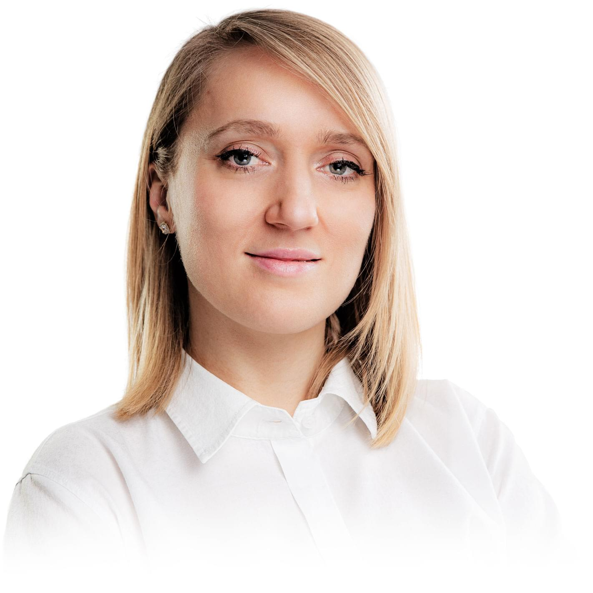

P R A C O W N I A
P R O T E T Y C Z N A

technik dentystyczny
Agata Cichocka
Agata Cichocka - technik dentystyczny
spec. projekt CAD, obsługa CAM, druk 3D
Jestem technikiem dentystycznym posiadającym ponad 10-letnie doświadczenie.
Niemal od początku zainteresowało mnie wykonywanie prac protetycznych w systemie CAD/CAM, dziale będącym najmłodszą i najnowocześniejszą dziedziną wykonywanego przeze mnie zawodu. Dzięki zaawansowanej technologii cyfrowej uzyskujemy nieosiągalną do niedawna precyzję w wykonywaniu uzupełnień protetycznych.
Ale…nie samą pracą człowiek żyje! Prywatnie stawiam na różnego rodzaju aktywności. Uwielbiam góry. Latem i jesienią są to wędrówki głownie po Tatrach i Bieszczadach, zimą snowboard. Wolny czas poświęcam również na naukę języka angielskiego -w 2014 otrzymałam dyplom na kierunku filologia angielska.
Jednak moją największą pasją jest rower, obecnym wyzwaniem jest pobicie rekordu jakim było przejechanie 116 km jednego dnia.